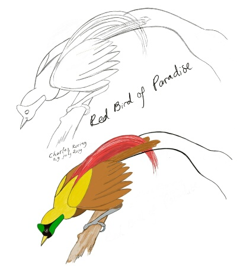
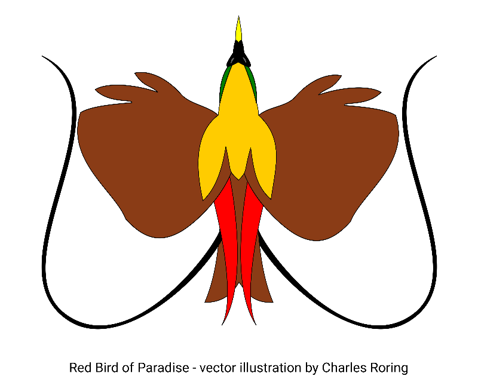

Birds of Paradise are beautiful and colorful birds in the family of Paradisaeidae that mostly live in tropical rainforest of New Guinea. As of today, there are 42 species that are known to science. Majority of the species are sexually dimorphic. One of them is Red Bird of Paradise (Paradisaea rubra). It lives in Waigeo, Gam and Batanta islands. Since the introduction of ecotourism in early 2000s in Raja Ampat, Red Bird of Paradise, together with Wilson's Bird of Paradise (Diphyllodes respublica), has become an important tourist attraction.
Red Bird of Paradise Sketch and Colored Drawing
Courtship Dance
As a tourist guide, I often go to Raja Ampat to run birdwatching and snorkeling tours for visitors who want to see both the underwater and the rainforest worlds of the archipelago. There are several sites for watching Red Bird of Paradise such as Sopen, Yenbekaki, and Saporkren. To watch the birds, visitors need to wake up early in the morning at around 05.00. After drinking tea and making preparation, they can start walking to the birdwatching site that is located deep in the forest. It takes around 1 hour to reach it. Bringing a good pair of binoculars is highly recommended. It will enhance the chance of seeing the paradise birds that usually dance in high trees. Several males will compete to win the heart of a female bird. At around 09.00, the courtship dance is finished. They will disappear into the thick forest to find fruits or to take a rest.
Vector Illustration of Red Bird of Paradise
Guardian of the Forest
Red Birds of Paradise, together with other tropical birds in the rainforest of New Guinea, play important role in maintaining the ecosystem of rainforest. They disperse seeds from the fruits that they eat to all corners of the forest. They also control the population of insects. Their droppings fertilize the soil. Unfortunately, because of their beautiful feather, they become important target among hunters. Birding tourism is one of the alternative solutions that can be offered to local communities who live near the forest. Villagers can generate income from tourists who come to their forest to watch birds. They can work as birding guides, porters, cooks and souvenir makers.

Red Bird of Paradise - watercolor on paper
From tens of observations that I did on this beautiful bird species, I decided to make some art illustration of the Red Bird of Paradise. The first one was a watercolour painting. For the second one, I did it digitally using inkscape software. So, the second illustration is a vector art.
Art Illustration
After creating two illustrations of Red Bird of Paradise, I uploaded them into Redbubble. Now they are available as prints on various products such as t-shirts, mugs, stickers, clock, throw pillows, and iPhone or Samsung Galaxy cases. Please, have a look at them by visiting this site: Red Bird of Paradise in Watercolour